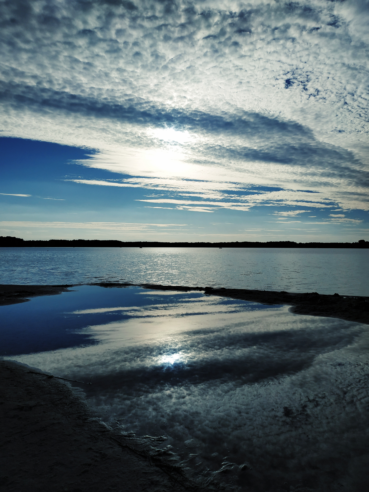
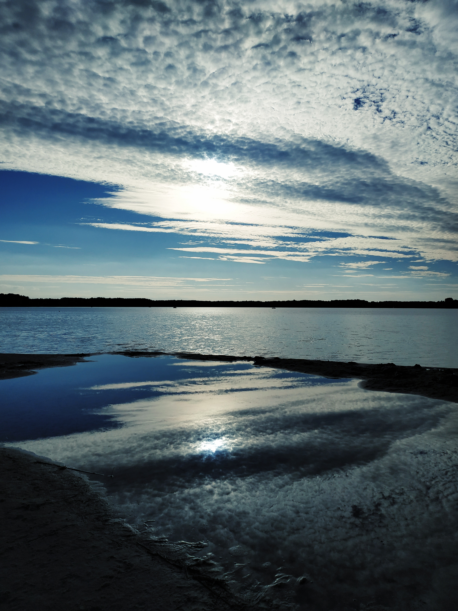

Amateur Photographer
from Lviv
Hello, everyone! My name is Nataly. I was born in a little Ukrainian town where I grew up and went to school. I received my education in another little town where I also met my husband. After the university we moved to a big city, Lviv, which is considered to be a cultural centre of my country. We found our jobs and are still living here. We've got two little daughters. I am now on a maternity leave learning web development. My husband goes to work every day, he is a research assistant at a museum. Looking after kids is hard but we try to be patient and hope for the best.
This site is, however, all about my favorite hobby - photography. I love nice images. I love when I make nice photos. Maternity leave is not a piece of cake, I should admit, especially if it lasts for 5 years. Honestly, I didn't take any professional courses, moreover, I use only my mobile phone for making photos. You can take it anywhere. So, please take a look at some of them below and don't judge me.
 


Email: klimchuknatalia@gmail.com